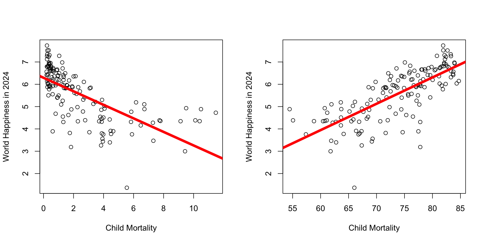
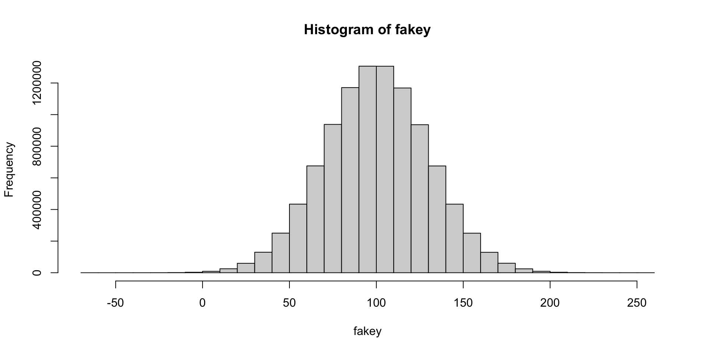
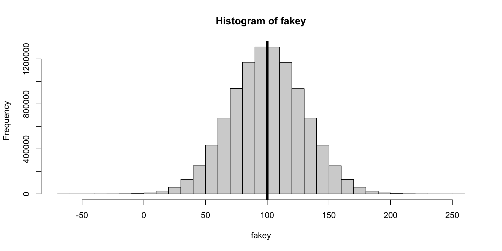
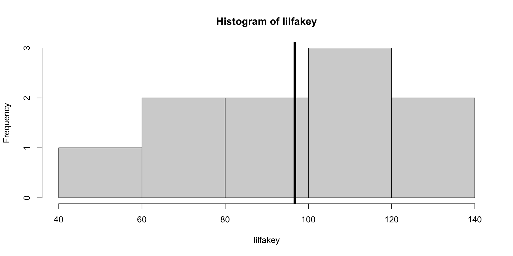
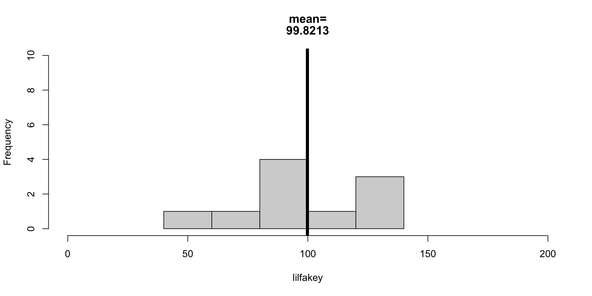
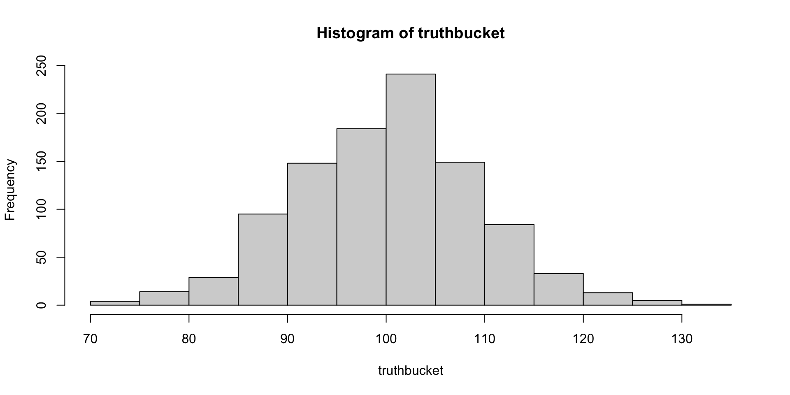

Check-In : Happy World
RECAP : Linear Models
Assumptions in Regression
Part 2 : Inferential Statistics
KEY IDEA : Sampling Error and Sampling Bias
Estimating Sampling Error : Bootstrapping
Scientific Method Stuff
- Sample v. Population
- Population : All the people relevant to your research question.
- Sample : The people in your study.
- KEY IDEA : Our sample will never equal the population!
- Sampling Bias : our sample differs from the population in predictable ways.
- Sampling Error : our sample differs from the population in random ways.
- Random : Each individual in the population has an equal probability of being in our sample.
- For Lab 3 : Find an article; is the sample representative (probably not)? How might bias influence the results?!
Sampling Error in R
- Be an omnipotent higher power who can create an entire world of individuals.
[1] 10000000[1] 90.29361 126.61216 124.63975 140.85657 93.06453 118.82447
- Run some stats on these data as we do.
[1] 99.98632
- Take a random sample from this population.
[1] 10[1] 1868741[1] 7010059 [1] 5364740 3711947 5686916 4050665 995655 6937825 4286786 1597196 5760628
[10] 1951378[1] 92.02205 [1] 106.78481 75.00253 91.75934 172.27662 89.63815 105.49816 133.81809
[8] 159.54560 105.61878 94.64476[1] NA [1] 111.36094 135.23610 90.18031 71.23667 132.53864 66.85899 49.11625
[8] 111.55471 107.15941 92.42795Check in with your buddy….what’s going on??? What are we doing and why are we doing this????
WHAT WE ARE DOING :
fakey : an object : a fake dataset of 10million values with a mean of 100 and sd of 30.
sample() : taking 10 random participant IDs….making sure they are valid IDs (within the possible range of fakey)
indexing [] : using the 10 random IDs to find 10 random people in fakey
result : getting ten random values from these imaginary people that we created as a population.
WHY ARE WE DOING THIS??? : to try and see how much the statistics from our RANDOM SAMPLE will vary from our population.
- Run some stats on this sample.
[1] 96.767
- Repeat These Steps Until You Get “THE TRUTH”

WHAT DID Y’ALL NOTICE :
sampling error :
we NEVER got the mean we were supposed to get (100).
we NEVER got the same mean with each sample (lack of RELIABILITY in our results)
our means weren’t ALL over the place…
they were always within our SD
they were all kinda around 100.
no pattern / bias to where the means were.
- Doing this 1000 times
[1] 1000
[1] 100.1188Estimating Sampling Error : NHST
Bootstrapping v. NHST
We can easily pull up these statistics using the summary() function. The interpretation of these statistics will take more time!
Standard Error is similar to the sampling error we estimated through bootstrapping (you will test this in Lab 6!).1
However, there are a few key conceptual and computational differences.
| Bootstrapping | Null Hypothesis Significance Testing (Standard Error) | |
|---|---|---|
how to estimate sampling error. we want to estimate how much our statistics might change due to re-sampling, because our sample isn’t a perfect representation of the population. |
we generate lots of “new” samples from our original dataset. these new samples are the same size as our original sample, but we use sampling with replacement to make sure we don’t get the exact same people in the sample every time. the goal is to see how small changes to our sample (that we might find with sampling error) influence our results (the model). | we calculate a statistic that is based on:
|
| statistic we care about that defines sampling error | standard deviation of the 1,000 (or however many) slopes we generated from bootstrapping. | standard error (estimates how much the average slope would differ from b = 0….the expected slope assuming the null) |
| how to evaluate our slope, relative to sampling error | calculate the % of slopes in the same direction as our slope calculate 95% confidence intervals, and see whether that range includes zero and / or numbers in the opposite direction of the slope you found. (e.g., if you found a negative number, does the range include positive numbers? If so, then likely we’d find a positive relationship due to chance) |
t-value : evaluates slope you found, relative to slope you might find due to random chance. use the t-value to calculate the probability given your distribution, and reject if p < .05 (or be more conservative and reject if p < .01 or p < .001). |
Note that the t-test does the same thing that our linear model does; evaluates the difference in groups, relative to an estimate of the sampling error we might observe.
PART 3 : Objectivity Interrogations
RECAP : we (mostly) think it’s possible to work toward validity
Anti-Positivism : Attempts to predict people with numbers is bad.
Positivism : We will someday make perfect predictions about people.
Post-Positivism : We will continually improve our predictions, but never get perfect.
Social Constructivism : There is no “truth” about people; we make it up.

DISCUSS : Questions Y’all Had :)
how to tell the difference between normal academic criticism of a study and criticism that comes from bias against the researcher?
I’d love to see some interview snippts of white interviewees’ answers. [PROF AGREES : the fact they did not include is an example of low DISCRIMINANT VALIDITY, since would want to see evidence that white people are not talking about these things too.]
Objectivity armoring…feels like it has a cultural dimension that we can explore in class as well. [PROF SAYS : YES!]
DISCUSS : examples from your experiences? anticipation in the future?

NEXT WEEK : Non-Empirical Paper